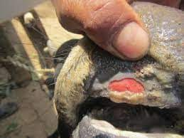

Natasha, ahli mikrobiologi
Kasus Penyakit Mulut dan Kuku (PMK) pada Sapi
Penyakit PMK menjadi penyebab tingginya kematian pada sapi pada tahun 2023. Penyakit ini disebabkan oleh virus Aphthovirus. Apakah penyakit ini dapat menular ke manusia?
August 2 | 6 mins read

Viana, ahli patologi
Cokelat dalam Meningkatkan Imun Tubuh
Keberadaan cokelat yang mudah ditemukan di sekitar kita, ternyata memiliki fungsi dalam meningkatkan imun. Bagaimana cokelat dapat melakukan hal tersebut?
August 10 | 5 mins read